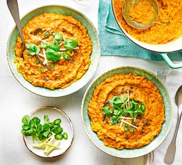

- ingredient
- ingredient
- ingredient
- ingredient
- ingredient
- ingredient
- ingredient
- ingredient
- ingredient
- ingredient
STEP 1,
Rinse the lentils until the water runs clear, then drain.
Heat the oil in a large, shallow pan and cook the onions over a
low heat for 10 mins until starting to brown, adding more oil if
the pan looks dry. Add the garlic and ginger, and cook for another 30 seconds.
Scatter in the curry leaves, if using, and all the spices and cook for a few minutes
more, then stir in the tomato purée and cook for a minute longer.
STEP 2
Stir in the lentils, ensuring they’re well coated in the spices,
then pour over the coconut milk and 850ml water. Bring to the boil,
stirring occasionally, then simmer for about 30 mins until the lentils
are soft and soupy. Scoop out the whole chilli and discard, then season
generously with salt. The dhal can now be left to cool, then frozen in portions,
or as one batch in a large plastic container. Defrost completely before reheating
in a pan over a low heat, adding more water to loosen if needed.
STEP 3
Serve with a sprinkling of the coriander, sliced ginger and chilli,
and drizzle with a bit more oil.